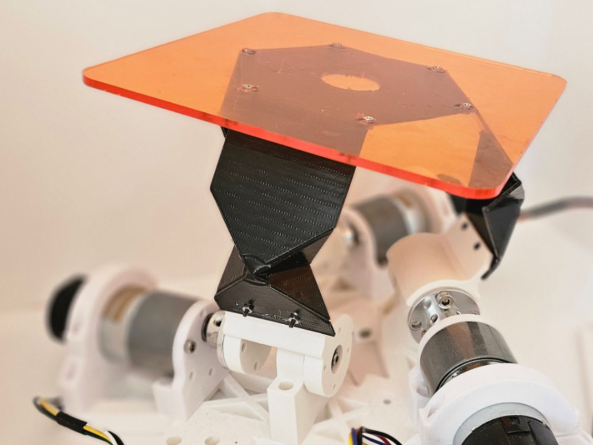
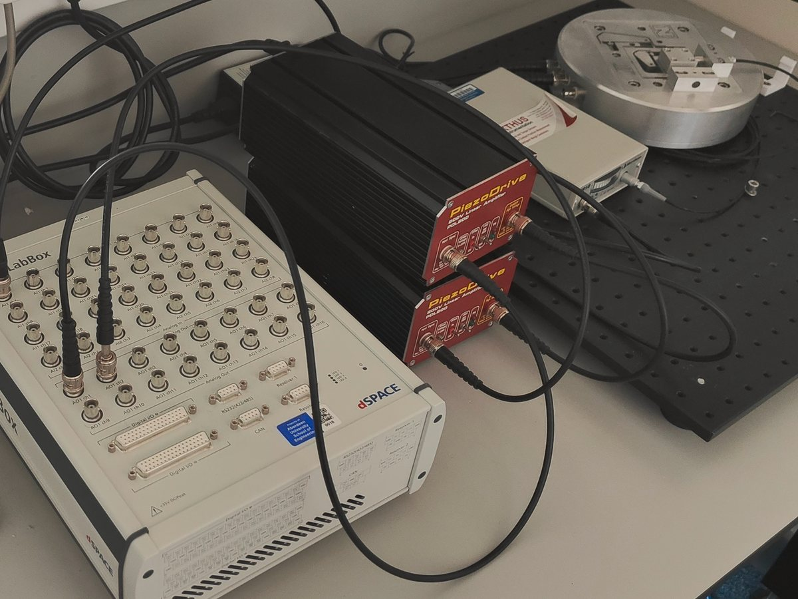
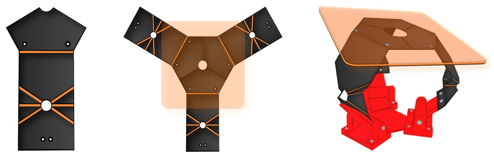
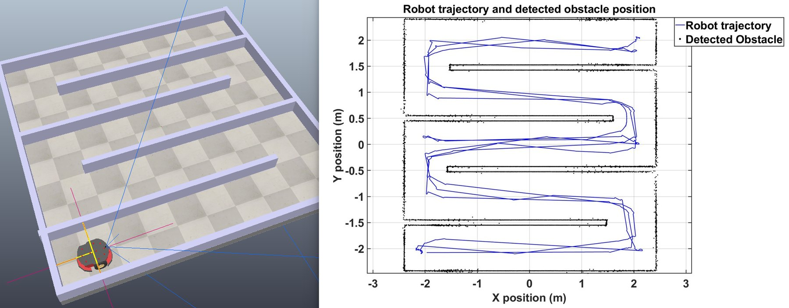
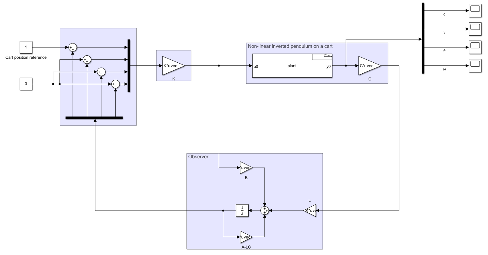
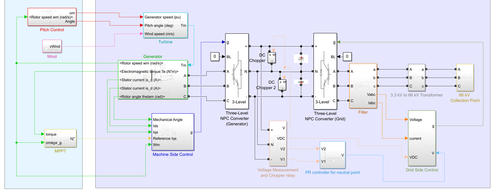

PhD researcher · Control engineering · University of Aberdeen
I build sim-to-real motion controllers for compliant mechatronic systems. I learn digital twins of the hardware, train controllers against them, and run them on the real machine without retuning.
Alongside my PhD: part-time electrical engineer, repairing electronics for offshore clients.
952 Hz bandwidth on a piezo nanopositioner, the highest measured on that stage
No force sensor: an origami robot that feels and yields to a push
ESP32 to dSPACE: one toolchain exports learned controllers to both
The controller is tuned against a frozen digital twin of the stage that models hysteresis, creep, resonances and delay. It is then exported to C and runs on the real stage without retuning.

Origami platform: three geared motors, folded legs, no force sensors.

Nanopositioning rig: dSPACE MicroLabBox, piezo amplifiers and the flexure stage.
Research
I am a doctoral researcher in the Artificial Intelligence, Robotics and Mechatronic Systems (ARMS) Group at the University of Aberdeen, supervised by Dr Andres San-Millan and Prof. Sumeet S. Aphale.
My PhD is one line of work. It started with making a rigidly driven origami robot soft and safe to touch. Making it work during fast motion led me to learn neural digital twins of its motors. The same twins then turned out to be a way to train controllers, which I now deploy on other compliant, nonlinear hardware, from a microcontroller to a real-time target.
Step 1 · Compliance without force sensors
Recovering compliance in a rigidly actuated origami robot
A robot driven by stiff motors that still gives way when you push it, with no force sensors.
Foldable origami robots are light and naturally gentle, which makes them attractive for working near people. Once they are driven by ordinary geared motors, though, they lose the softness that made them safe. I recover that compliance in control, with no force sensors.

From flat sheet to robot: one leg's fold pattern, the three-leg layout, and the folded platform on its motor mounts.
Designed, built and instrumented a three-motor origami platform in collaboration with Prof. Jamie Paik's group at EPFL, from CAD and fabrication to a full test rig with real-time ESP32 firmware and a host interface for live tuning and logging (first LabVIEW, later Python).
Made the platform yield to a push using sensorless admittance control built on disturbance observers, so the motors read contact from their own signals.
Estimated the external push force and where it was applied from motor signals alone, checked against a calibrated force sensor, and made dropped loads bounce noticeably less on impact.
Programmed the platform's feel on the fly, from a stiff wall to a soft spring or a marshmallow-like give, while playing back touch cues such as a gentle purr.
On the rig Pushes felt down to 0.05 Nm · load located to within 2 cm · a 1 kg weight dropped from 3 cm bounces 34% less · back on its path about 1.4 s after a push.
admittance control
disturbance observers
ESP32 · C/C++
LabVIEW · Python
CAD and fabrication
Video: sensorless compliance on the origami platform, from the Stiffness Paradox paper · Watch on YouTube
Step 2 · Feeling contact during motion
Can a low-cost geared robot feel a push while it moves?
A cheap robot that can tell your push apart from its own fast motion.
The observer-based controller works well at rest but struggles during fast motion. Gear friction flips at every change of direction, so standard observers report forces nobody applied, and the thresholds that hide them also hide a light touch. The same problem affects most of the cheap geared arms now used in robot learning.
Built a reference-driven neural digital twin: a compact NARX model of each motor that runs inside a copy of the joint's own controller, following the same reference as the real joint.
Because the twin predicts the effort of the robot's own motion, the gap between predicted and measured motion keeps the push and drops the motion, including friction reversals.
All three twins run live on the ESP32 that already drives the robot, with no extra sensors or computers.
People can teach it by touch: the robot learns a new path when guided by hand or after meeting an obstacle.
Where it applies: haptic devices, collaborative robots that share space with people, robots that people teach by hand, and low-cost rehabilitation devices.
NARX digital twins
PyTorch
embedded inference
physical human–robot interaction
Step 3 · From twin to controller
Training controllers through a frozen model of the plant
Train a controller in simulation, then drop it onto a microcontroller or a real-time target.
A learned twin that predicts a plant well can also teach a controller. I train a neural-network controller by passing its output through a frozen model of the plant, a learned twin or any other differentiable model, and updating only the controller's weights until the closed loop behaves as specified.
Built the training method and toolchain in Python and PyTorch, with automatic export of the trained controller to C/C++.
The same export runs on an ESP32 and inside MATLAB/Simulink and dSPACE real-time targets, with bit-exact replay checks of the deployed code against logged hardware data.
PyTorch
model-reference control
code generation
C/C++
Simulink S-functions
Step 4 · Proof on precision hardware
Learned feedback control of a piezoelectric nanopositioner
Nanometre-scale positioning with a learned controller that worked on the real stage without retuning.
To test the method on a demanding compliant structure, I applied it to a piezoelectric nanopositioner. It is a flexure-guided stage with many of the same troubles as an origami system, at nanometre scale: lightly damped resonances, hysteresis, creep and loop delay.
Identified a digital twin of the stage covering hysteresis, creep, modal dynamics and loop delay, and trained one controller through this frozen, physics-structured model that handles damping, tracking and hysteresis together.
Deployed it on a dSPACE MicroLabBox at 20 kHz with no retuning on the rig.
Benchmarked it on the same rig against classical integral resonant and delay-compensated controllers designed for this stage, and confirmed by replaying logged rig data that the code that ran was exactly the controller that was trained.
On the rig 952 Hz closed-loop bandwidth (−3 dB), the highest measured on this stage: 1.33× its first resonance and 32% above the best published hardware result (720 Hz) · 1 µm step: 0.25 ms rise, 1.2% overshoot · 100 Hz triangle scan: 119 nm rms error · 2.0 nm rms noise at rest.
system identification
hysteresis and creep models
dSPACE MicroLabBox
20 kHz real-time C
Publications
2026
The Stiffness Paradox: Recovering Compliance in Rigidly Actuated Origami Robotics under review
M. Koulas, S. S. Aphale, J. Paik and A. San-Millan. IEEE/ASME Transactions on Mechatronics.
2026
Enhancing Nanopositioning Bandwidth via PAVPF and Pole Placement in the Presence of Delay under review
A. B. Gutierrez, M. Koulas, S. S. Aphale and A. San-Millan. Mechatronics.
2024
Butterworth Pattern-Based Integral Resonant Controller Design for Nanopositioning Systems with Internal Delay
M. Koulas, A. B. Gutierrez, S. S. Aphale and A. San-Millan. UKACC 14th International Conference on Control.
In prep.
One Learned Feedback Law for Damping, Tracking and Hysteresis Compensation in Piezoelectric Nanopositioners
M. Koulas et al. Journal paper in preparation.
In prep.
Can Low-Cost Geared Robots Feel a Push While They Move?
M. Koulas et al. Letter in preparation (reference-driven neural twin for sensorless admittance).
Projects
Mobile robotics
Mapping and learned navigation for a mobile robot in a maze
A simulated robot that drives itself through a maze and maps the walls as it goes.
Set up a Pioneer P3-DX robot in CoppeliaSim with a front camera and ultrasonic range sensors, controlled from Python over the ZeroMQ remote API.
Collected labelled camera images by driving the robot by hand, processed them with OpenCV, and trained a convolutional network in Keras to choose forward, left or right from the camera view.
Built a map of the maze from the range readings along the robot's estimated path.

The maze in CoppeliaSim (left), and the robot's path (blue) with the wall points it detected (black) (right). Watch the video
CoppeliaSim
Python
OpenCV
Keras
mapping
State-space control · coursework
LQG control of an inverted pendulum on a cart
Balancing a pendulum while moving its cart to a target, using only the measured outputs.
Designed an LQR state-feedback gain and a Kalman filter that estimates the full state from the measured outputs, on the linearised model.
Tested the combined LQG controller on the nonlinear cart-pendulum plant in Simulink, against limits on cart travel, actuator force and settling time.

Simulink model: LQR gain K acting on the Kalman filter's state estimate (gains B, L, A−LC), wrapped around the nonlinear plant.
LQR
Kalman filter
MATLAB
Simulink
Power electronics · MEng group project
Converter control for a 120 MW offshore wind farm
The full electrical drive train of one 8 MW turbine, from generator to 66 kV collection point, in Simulink.
Our team designed a 120 MW farm of fifteen 8 MW permanent-magnet turbines. I built the control for one turbine's back-to-back three-level NPC converter.
Machine side: field-oriented control with d–q current loops and cross-coupling decoupling, tracking the torque reference from the MPPT stage.
Grid side: voltage-oriented control on a PLL-synchronised frame, with DC-link voltage and reactive-power loops, a PR controller that balances the NPC neutral point, and DC choppers for fault ride-through, checked against grid-code rules.

One turbine in Simulink: generator, back-to-back three-level NPC converters, machine- and grid-side control, neutral-point balancing and the 3.3 kV to 66 kV link. Pitch control, MPPT and the PLL were built by teammates.
field-oriented control
voltage-oriented control
PR control
three-level NPC
Simulink
Embedded and PCB design
A custom motor-controller shield and an ATtiny85 fire-detection board, from schematic to bring-up, plus an ESP32 web interface for live controller tuning.
Self-balancing robot
First place in a university-wide competition, with PID design and tuning in a three-person team.
Background
Sep 2026–
Electrical Engineer (part-time), Metron
Hands-on industry work alongside my PhD: fault diagnosis and component-level repair of electronic systems for offshore clients, troubleshooting at schematic and PCB level.
2025–
PhD, Electrical and Electronic Engineering
University of Aberdeen, ARMS Group. Learned and model-based control for precision motion and compliant robots.
2020–25
MEng, Electrical and Electronic Engineering, First Class Honours
University of Aberdeen. Dissertation: Control of an Origami 3-DoF Manipulator.
2024
Carnegie Vacation Scholar
Carnegie Trust and University of Aberdeen. Designed and manufactured the origami manipulator and prototyped its first control algorithm.
2023
Undergraduate research intern, nanopositioning control
University of Aberdeen. Integral resonant control design under delay, leading to the UKACC 2024 paper.
Control
Loop shaping, integral resonant and positive-position feedback, model-reference and learned control, system identification, hysteresis and creep modelling, admittance control, disturbance observers, Kalman filtering.
Real-time and embedded
dSPACE MicroLabBox, Simulink and S-functions, C/C++ on ESP32, Arduino and ATtiny, FreeRTOS, SPI, I²C, UART, PWM, encoders, LabVIEW.
Software and ML
Python, PyTorch, TensorFlow, MATLAB, Git, OpenCV.
Hardware
PCB design and bring-up, soldering and rework, sensor integration and calibration, motor drive commissioning, SolidWorks.
Service and teaching. Former Chair of the IEEE Student Branch at Aberdeen, which I revived from dormancy; former President of the EEE Society; teaching demonstrator in mathematics, programming and engineering design.
Contact
I am open to a 3–6 month research or engineering internship in 2027 in precision motion control, mechatronics or sim-to-real robotics. I am also glad to hear from anyone working on compliant robots or sim-to-real control.